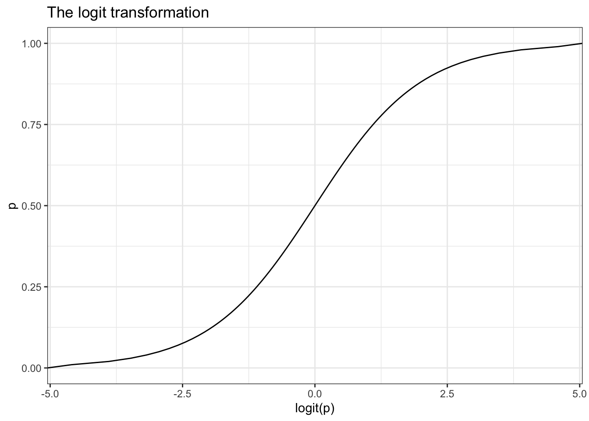

p <- seq(0, 1, by=.01)
logit.p <- log(p/(1-p))
qplot(logit.p, p, geom="line", xlab = "logit(p)", main="The logit transformation") +
theme_bw()
Robin Donatello
November 10, 2025
Consider an outcome variable \(Y\) with two levels: Y = 1 if event, = 0 if no event.
Let \(p_{i} = P(y_{i}=1)\).
Two goals:
Binary data can be modeled using a Logistic Regression Model
The odds are defined as the probability an event occurs divided by the probability it does not occur: \(\frac{p_{i}}{1-p_{i}}\).
The function \(ln\left(\frac{p_{i}}{1-p_{i}}\right)\) is also known as the log odds, or more commonly called the logit. This is the link function for the logistic regression model.
We use this logit function to transform a binary outcome (only 0 or 1) variable into a continuous probability (which only has a range from 0 to 1).
The logistic model then relates the probability of an event based on a linear combination of X’s.
\[ log\left( \frac{p_{i}}{1-p_{i}} \right) = \beta_{0} + \beta_{1}x_{1i} + \beta_{2}x_{2i} + \ldots + \beta_{p}x_{pi} \]
This means the relationship between \(X\) and the probability of success is nonlinear, but the relationship between \(X\) and the log-odds is linear.
Logistic regression model: \(logit(y) = \beta_0 + \beta_1 X\)
The odds at \(X = x\) is \(e^{\beta_0 + \beta_1 x}\)
The odds at \(X = x+1\) is \(e^{\beta_0 + \beta_1 (x+1)} = e^{\beta_0 + \beta_1 x} * e^{\beta_1}\)
The **odds ratio (OR) for a 1 unit change in \(X\) is then \(e^{\beta_1}\)
The OR measures how the odds of success change for a one-unit increase in \(X\), holding other variables constant.
Consider a binary outcome with values YES, coded as 1, and NO, coded as 0.
\[e^{\hat{\beta} \pm 1.96 SE_{\beta}} \]
This math holds for any \(k\) unit change in x. The linearity of the confidence interval only applies at the untransformed level of the \(\beta\)’s. NOT the odds ratio.
Let’s fit a model to examine the effect of identifying as female (gender) has on a depression (cases) diagnosis.
Call:
glm(formula = cases ~ sex, family = "binomial", data = depress)
Coefficients:
Estimate Std. Error z value Pr(>|z|)
(Intercept) -3.3511 0.6867 -4.880 1.06e-06 ***
sex 1.0386 0.3767 2.757 0.00583 **
---
Signif. codes: 0 '***' 0.001 '**' 0.01 '*' 0.05 '.' 0.1 ' ' 1
(Dispersion parameter for binomial family taken to be 1)
Null deviance: 268.12 on 293 degrees of freedom
Residual deviance: 259.40 on 292 degrees of freedom
AIC: 263.4
Number of Fisher Scoring iterations: 5We exponentiate the coefficients to back transform the \(\beta\) estimates into Odds Ratios
| Characteristic | OR | 95% CI | p-value |
|---|---|---|---|
| sex | 2.83 | 1.40, 6.21 | 0.006 |
| Abbreviations: CI = Confidence Interval, OR = Odds Ratio | |||
Females have 2.8 (1.4, 6.2) times the odds of showing signs of depression compared to males (p = 0.006).
note the multiplicative effect language “times the odds”, not just “higher odds”
Let’s continue with the depression model, but now also include age and income as potential predictors of symptoms of depression.
mvmodel <- glm(cases ~ age + income + sex, data=depress, family="binomial")
tbl_regression(mvmodel, exponentiate = TRUE)| Characteristic | OR | 95% CI | p-value |
|---|---|---|---|
| age | 0.98 | 0.96, 1.00 | 0.020 |
| income | 0.96 | 0.94, 0.99 | 0.009 |
| sex | 2.53 | 1.23, 5.66 | 0.016 |
| Abbreviations: CI = Confidence Interval, OR = Odds Ratio | |||
MKmisc, function HLgof.test